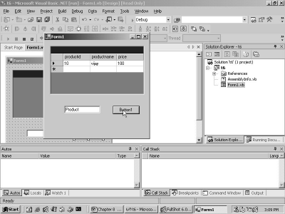
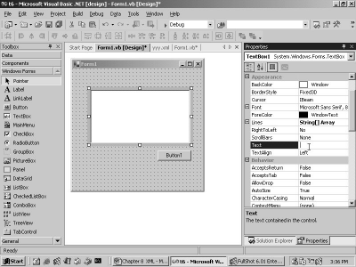
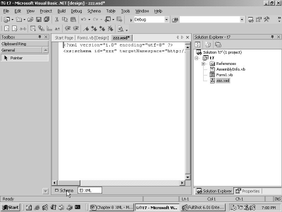

6. XML and XSD
Let us now focus on XML, which
seems to be the order of the day, since every developer worth his salt seems to
be singing this new mantra! Though it is impossible to comprehend XML in a day,
but we still are determined to give it a try.
We start by creating a new
project called t6 in the c:\v1 subdirectory. For this, click on the
File-New-Project menu option. Then, select Visual Basic Project in the first
pane, and select Windows Application in the second pane. Click on OK to
generate the smallest possible Windows application.
Now, to add a new file to this
project, click on File-New, and select the option of File instead of Project,
as shown in screen 6.1.
|
Screen 6.1 |
The dialog box that emerges is shown
in screen 6.2. It displays a long list of file types that can possibly be added
to the project.
|
Screen 6.2 |
Normally, most files that are
vital for the project get added automatically. However, we are still rendered
the flexibility of adding more files, if we so desire. Choose the option of XML
file and click on Open. This brings up an editor, with a single line written in
it, as revealed in screen 6.3.
|
Screen 6.3 |
<?xml version="1.0" encoding="utf-8" ?>
The above stipulated line has to
be the very first line of every XML document. XML stands for eXtensible Markup
Language. It is not a programming language like Visual Basic.Net, but a
language akin to English.
Had we created the file outside
the Visual Studio.Net framework, the above line would have had to be inserted
manually. This is all.
In future, you hold the
prerogative of creating the above file in any word processor that you may
fancy, since it is absurd to use Visual Studio.Net merely for editing purposes.
Every XML document adheres to
certain rules. The first rule is that the first line in the document must begin
with <?xml and end with ?>. Any line beginning with <? is known as a
Directive. Rules are meant to be followed, with no questions asked. The second
rule is that the XML directive must have an attribute called version, with a
value of 1.0.
An attribute is merely a word
that is equated to some value. The value of the attribute version can only be
1.0, since this is the only valid version of XML in existence. The second
attribute to the XML directive is 'encoding'. This attribute is optional. The
value of utf-8 assigned to it signifies that the words that appear in the file
henceforth, belong to the English language, and not to any other language, such
as Chinese, etc.
We now append some more lines as
follows:
On the next line, enter the word
<customerslist>. Immediately after the 'greater than' sign, the same word
is entered again within angle brackets, but this time with the / sign preceding
it. This is represented in screen 6.4, where we see the following text:
<customerslist></customerslist>
|
Screen 6.4 |
The code editor can surely read our
minds! The rationale behind insertion of the above text by the code editor is
that, any word that begins with an angle bracket, must also end with an angle
bracket.
The words enclosed within angle
brackets are called 'tags'. Thus, customerslist is a tag. Every start tag must
have an end tag. An end tag is similar to the start tag, except that it has the
/ sign placed before the tag name. The editor is smart enough to generate the
end tag for us.
The first tag that is
encountered in the XML file is called the root tag. All other tags must be
placed within this tag. The root tag is mandatory. It can be assigned any name,
since there are no rules in XML governing this aspect.
We have created the XML file to
store a list of two customers. The basic information supplied for each customer
is the name and the phone number. You have to enter the additional lines, so
that the XML file finally represents the text given below in the specified
format.
<?xml version="1.0" encoding="utf-8" ?>
<customerslist>
<cust>
<name>Vijay Mukhi</name>
<phone>4964339</phone>
</cust>
<cust>
<name>Sonal</name>
<phone>4964338</phone>
</cust>
</customerslist>
The details regarding each
customer are enclosed within the tags of cust and /cust. Moreover, within the cust
tags, there exist two child tags called name and phone, both of which follow
the same rules.
Remember that the end tags get
inserted automatically in the XML Editor. To save this file, click on 'File-
Save XMLFIle1 As' menu option. This is shown in screen 6.5.
|
Screen 6.5 |
This brings us to a dialog box
as shown in screen 6.6, where we change the sub directory to point to the root directory,
and name the XML file as yyy. This results in the above XML file being saved as
yyy.xml in the root directory.
|
Screen 6.6 |
An alternate approach to achieve
the above would be to simply fire up a word processor, enter the above lines
manually, and then, save it in a file named yyy.xml.
Once the file has been created,
bring in a DataGrid control, followed by a button. Then, double click on the
button and enter the following lines of code:
Private Sub Button1_Click(ByVal sender As System.Object, ByVal e As System.EventArgs) Handles Button1.Click
Dim d As DataSet
d = New DataSet("zzz")
d.ReadXml("c:/yyy.xml")
DataGrid1.DataSource = d
DataGrid1.DataMember = "cust"
End Sub
In the above code, a new DataSet
object 'd' is created, with the constructor being assigned the name zzz. Naming
the DataSet as zzz is optional. The ReadXml function from the dataset class is
then employed, to populate the DataSet object.
This function is furnished with
the full path of the above XML file. The end result is that the function fills
up the dataset with records from a table called Cust. This occurs because the
customer data is enclosed within the cust tag.
The DataSource property of the
DataGrid requires a DataSet object. Therefore, it is initialized to d, which is
the freshly created dataset.
There are alternative approaches
to performing any task. Similarly, a dataset can also be populated by fetching
data either from a database table, or from a file on disk. The DataMember
property is set to the cust table in the DataSet.
Press F5 to run the program.
Doing so will result in the display of a button labeled Button1 and an empty
DataGrid. Click on the button to populate the grid with the two records from
the XML file, as shown in screen 6.7.
|
Screen 6.7 |
The names of the tags become the
field names. Therefore, two fields are visible, i.e. 'name' and 'phone'.
Further, the details provided for each customer are represented as records in
the table.
This example illustrates the
fact that a dataset can be filled up with records from an XML file, without
letting the DataGrid control get a whiff of it. The Datagrid couldn't care less
about the origin of the data, as long as it receives a dataset.
The same example can also be
re-written, using one of the features in Visual Basic.Net.
Private Sub Button1_Click(ByVal sender As System.Object, ByVal e As System.EventArgs) Handles Button1.Click
Dim d As DataSet
d = New DataSet("zzz")
d.ReadXml("c:/yyy.xml")
With DataGrid1
.DataSource = d
.DataMember = "cust"
End With
End Sub
Modify the code contained in the
button, to the code stipulated above. The output however remains the same.
The 'With' statement calls for a
name. Hence, we have provide the name of the DataGrid object to it, i.e.
DataGrid1. In addition to this, all lines of code upto the 'End With', must
begin with a dot. This approach precludes the need to use the object name,
along with its properties, over and over again. Hence, if you are handling multiple properties of the same
object, enclose them within 'With' and 'End With'.
The above method is often
encountered in the samples provided with Visual Studio.Net. Hence, we decided
to implement it here. Finally, it is your prerogative to decide whether you
wish to write the control name every time, or you would rather write it once
and place dots before every property name thereafter.
Click on the tab yyy.xml, and
then, add the following lines of XML to the file:
<?xml version="1.0" encoding="utf-8" ?>
<customerslist>
<cust>
<name>Vijay Mukhi</name>
<phone>4964339</phone>
</cust>
<product>
<productid>10</productid>
<productname>vijay</productname>
<price>100</price>
</product>
<cust>
<name>Sonal</name>
<phone>4964338</phone>
</cust>
</customerslist>
Then we click on the tab Form1.vb
Design, and bring in a textbox called TextBox1. The text property of the
control is also blanked out. Then double click on the button and write out the
following code:
Private Sub Button1_Click(ByVal sender As System.Object, ByVal e As System.EventArgs) Handles Button1.Click
Dim d As DataSet
d = New DataSet("zzz")
d.ReadXml("c:/yyy.xml")
With DataGrid1
.DataSource = d
.DataMember = TextBox1.Text
End With
End Sub
Other than the modification in one
of the lines, the rest of the code remains the same. The DataMember property
that was earlier set to cust, is now initialized to the Text property of the
TextBox.
Now, press F5 to run the
program. In the textbox, enter the name of the table as Product. Then, click on
the button. The output is depicted in screen 6.8.
|
 |
|
Screen 6.8 |
In the XML file, another tag
called Product has been added. Thus, the DataSet now contains two tables, i.e.
cust and product. The user can either enter 'cust' or 'product' in the textbox.
Depending on the name assigned to the DataMember property of the DataGrid, data
from the selected table is displayed.
Close the running application.
Then, click on the textbox to select it, and press the delete key. To delete the
DataGrid control, use the menu option, i.e. first select the Datagrid control,
and then, click on the menu option of Edit-Delete.
Now, bring in a new textbox
control. The only problem with a textbox is that, even though you can alter its
size, by default it displays only a single line.
To incorporate multiple lines in
the textbox, select the control and scroll down to the property named MultiLine
in the properties window. The default value assigned to this control is False.
Click on the drop down listbox, as shown in screen 6.9, and select the value of
True.
|
|
|
Screen 6.9 |
Since this property now has a
value of True, we are allowed to change the vertical height of the textbox, as
shown in screen 6.10.
|
 |
|
Screen 6.10 |
Double click on the button, and
replace the existing event handling code with the code specified below.
Private Sub Button1_Click(ByVal sender As System.Object, ByVal e As System.EventArgs) Handles Button1.Click
Dim s As New System.IO.StringWriter()
Dim d As DataSet
d = New DataSet("hi")
d.WriteXmlSchema(s)
TextBox1.Text = s.ToString
End Sub
Now, press F5 to run the
program. When you click on the button, the textbox displays some text. This is
seen in screen 6.11.
|
|
|
Screen 6.11 |
The text entered in the textbox
is shown below.
<?xml version="1.0" encoding="utf-16"?>
<xs:schema id="hi" xmlns="" xmlns:xs="http://www.w3.org/2001/XMLSchema" xmlns:msdata="urn:schemas-microsoft-com:xml-msdata">
<xs:element name="hi" msdata:IsDataSet="true">
<xs:complexType>
<xs:choice maxOccurs="unbounded" />
</xs:complexType>
</xs:element>
</xs:schema>
In the click event of the
button, the Dim statement is used to define and create an object 's' as an
instance of the StringWriter class, from the System.IO namespace. The
StringWriter class deals with large strings very effectively.
We then create a new DataSet
object 'd', and call the function WriteXmlSchema from it. This function accepts
a StringWriter parameter 's' and writes the XML schema to it. The Text property
of the TextBox is then initialized to the ToString function from the TextWriter
class.
In the .Net world, all classes
normally have a ToString function, which returns the string representation of
any object. In this case, the WriteXmlSchema function writes out the entire
schema, which is then displayed in a String format.
Let us now attempt to understand
what an XML schema actually entails.
An XML schema file is an XML
document, and hence, like all XML documents, it starts with the XML directive
statement. The directive statement is followed by the root tag named 'schema'.
An XML schema has to begin with
a tag called 'schema'. However, all and sundry can create tags such as schema.
So, to avoid any mis-match, the tag is prefixed with a namespace followed by a
colon. The schema tag is prefixed with 'xs' and a colon. The name of the prefix
is not very significant. What is more important is the attribute xs, which
uniquely identifies the xs namespace, and thus, the schema tag. In this case,
the xs namespace prefix points to the URI http://www.w3.org/2001/XMLSchema.
This file contains the rules for
the elements that belong to the xs namespace. We shall explain each of these
rules, one at a time. The xs namespace prefix belongs to the xmlns namespace
prefix, which is not set to anything. The attribute of 'id' merely identifies
the schema. It is assigned the name of the DataSet, i.e. "hi". This
part can be safely ignored for the time being.
Yet another namespace prefix of
'msdata' is created. Thus, all tags prefaced with msdata belong to a namespace
that is distinct from the tags prefaced with 'xs'. This concept of namespaces
is identical to that of the namespaces in Visual Basic.Net. We utilize this
concept to uniquely identify an entity.
The schema element starts with
the element tag, with the name attribute initialized to "hi". The
attribute IsDataSet is set to True, to confirm the representation of the
DataSet.
The complexType tag is a child
in the element tag. It defines the type for the element named "hi".
The complexType is followed by a choice element, which permits us to pick out
our choice from amongst the options that it contains. We shall not explain this
any further at this juncture, since there is nothing to choose from.
The maxOccurs attribute decides
on the occurrence of the elements that follow. The value of 'Unbounded'
indicated that there are no limits. The 'choice' tag is a single tag, as it
ends with a /. The above Schema is incomplete, since there is absolutely no
data in the DataSet.
Private Sub Button1_Click(ByVal sender As System.Object, ByVal e As System.EventArgs) Handles Button1.Click
Dim s As New System.IO.StringWriter()
Dim d As DataSet
d = New DataSet("hi")
d.ReadXml("C:\yyy.xml")
d.WriteXmlSchema(s)
TextBox1.Text = s.ToString
End Sub
This shortcoming is corrected in
the code given above. The only change that has been augmented is the addition
of the ReadXml function. This populates the XML schema with data from the file
yyy.xml.
Before executing the above
program, select the textbox control, and then, scroll down the property window.
Then, change the value for the ScrollBars property from None to Both. As an
outcome of this, if and when the data in the textbox exceeds the horizontal or
vertical boundaries, the system will automatically generate a scrollbar. Press
F5 to run the program, and then, click on the button. The screen 6.12 shows a
vertical scrollbar.
|
|
|
Screen 6.12 |
The schema file that is listed
in the textbox, is given below.
<?xml version="1.0" encoding="utf-16"?>
<xs:schema id="customerslist" xmlns="" xmlns:xs="http://www.w3.org/2001/XMLSchema" xmlns:msdata="urn:schemas-microsoft-com:xml-msdata">
<xs:element name="customerslist" msdata:IsDataSet="true">
<xs:complexType>
<xs:choice maxOccurs="unbounded">
<xs:element name="cust">
<xs:complexType>
<xs:sequence>
<xs:element name="name" type="xs:string" minOccurs="0" />
<xs:element name="phone" type="xs:string" minOccurs="0" />
</xs:sequence>
</xs:complexType>
</xs:element>
<xs:element name="product">
<xs:complexType>
<xs:sequence>
<xs:element name="productid" type="xs:string" minOccurs="0" />
<xs:element name="productname" type="xs:string" minOccurs="0" />
<xs:element name="price" type="xs:string" minOccurs="0" />
</xs:sequence>
</xs:complexType>
</xs:element>
</xs:choice>
</xs:complexType>
</xs:element>
</xs:schema>
The Schema file incorporates
many new lines. The element no longer uses the name "hi" as the name
of the dataset; instead, it takes the root tag of customerslist specified in
the XML file. The complexType contains data that describes itself better.
The 'choice' element contains
two element tags, since the DataSet comprises of two tables of 'cust' and
'product'. The maxOccurs attribute specifies that the two tables can occur as
many times as is required. The 'cust' and 'product' tags should be permitted to
occur infinite number of times, as there is no restriction on the number of
records that these tables may contain.
The next thing of importance is
a description of the data structure of these tables, embodying the field names,
their data types, etc. This is what the XML schema world is all about. It is
used to describe entities, and to ensure that it replaces SQL while the data in
the databases is being defined.
There exists an element called
'cust', followed by the complexType element. A 'sequence element' basically
lists out the order that is to be followed. The 'cust' table has two fields,
viz. name and phone. Therefore, there are two elements representing the two
fields.
The type attribute comprises of
the data type of the fields, and the minOccurs has a value of 0. This indicates
the fact that, for the field, the minimum number of occurrences is 0, i.e. the
field is optional. The default value of maxOccurs is 1. Thus, the element need
not be present, but if it is present, it can only occur once. Thereafter, the
sequence, the complexType and the element tags are all closed. The same
procedure is then repeated for the product table.
Although the XML schema gives a
description of the data, it actually contains no data at all. The newer
versions of SQL Server have avoided using SQL. Instead, they store data in the
XML format, thus allowing any entity to access this data. The very rationale
behind using schemas is that, they are very expressive and they define rules,
which the data in our XML files must follow.
We commence by creating our own
XML schema file, using the Schema Painter provided by Visual Studio.Net.
As always, create a simple
windows application by clicking on File-New-Project menu-option, and by
selecting Visual Basic projects and Windows application, in their respective
panes. Name the project as t7, and store it in the c:\v1 subdirectory.
From here onwards, we do things
differently. We add a new item to our project, but instead of choosing the New
option, we opt for the 'Add New Item' from the File menu, as shown in screen
6.13.
|
|
|
Screen 6.13 |

This brings us to screen 6.14,
where the dialog box contains a dozen things. The option that fascinates us is
the XML Schema item. Therefore, we click on it and change its name to zzz.xsd.
|
|
|
Screen 6.14 |
Then, we click on Open. This
brings up the file zzz.xsd in the Solution Explorer, and it also kick starts
the Schema Painter, as shown in screen 6.15.
|
|
|
Screen 6.15 |
The toolbox also undergoes
transformation, displaying a large number of elements that can be added to the
painter. If we click on the XML option given at the bottom, it transports us to
the XML code that gets generated, whenever the schema is changed. The screen
6.16 shows the option.
|
 |
|
Screen 6.16 |
The XML schema file that gets
created, is shown below:
<?xml version="1.0" encoding="utf-8" ?>
<xs:schema id="zzz" targetNamespace="http://tempuri.org/zzz.xsd" elementFormDefault="qualified" xmlns="http://tempuri.org/zzz.xsd" xmlns:mstns="http://tempuri.org/zzz.xsd" xmlns:xs="http://www.w3.org/2001/XMLSchema">
</xs:schema>
The file is very similar to the
one we explained earlier. However, it now has some new attributes added to it.
The attribute targetNamespace
contains the location of the elements that do not have a namespace prefix. The
elementFormDefault attribute can take one of the two values of 'qualified' or
'unqualified'. The default value is 'unqualified'. Since the value chosen is
'qualified', all elements from the target namespaces that are referred to, have
to be qualified with the namespace prefix.
Had we clung on to the default
value, there would have been no need for qualifying the elements, provided that
they belong to the target namespace. In
addition to these, yet another namespace prefix called 'mstns' is created.
We will now switch back to the
Schema tab at the bottom, and click on the simpleType control. A mere click on
it does no wonders. The control must be dragged and dropped onto the form.
Change the name from simpleType1
to 'vijay', and leave the data type string unchanged. Screen 6.17 exhibits the
outcome of our actions.
|
|
|
Screen 6.17 |
If you are also burning with
curiosity as we were, you would click on the word 'string'. This will display a
drop down listbox as seen in screen 6.18.
|
|
|
Screen 6.18 |
Now, switch over to the XML tab
to view some fresh XML code that has been incorporated.
<?xml version="1.0" encoding="utf-8" ?>
<xs:schema id="zzz" targetName_pace="http://tempuri.org/zzz.xsd" elementFormDefault="qualified" xmlns="http://tempuri.org/zzz.xsd" xmlns:mstns="http://tempuri.org/zzz.xsd" xmlns:xs="http://www.w3.org/2001/XMLSchema">
<xs:simpleType name="vijay">
<xs:restriction base="xs:string" />
</xs:simpleType>
</xs:schema>
Henceforth, only the newly
generated sections of the file would be shown, since we see no point in
repeating the explanation of the schema element, over and over again.
An element is the basic entity
for a schema, since it represents a field or a DataSet. Every element needs a
type. There are basically two types in the schema world, viz. complexType and
simpleType. To represent simple data, a
simpleType is used, and to represent complex data, a complexType is used. The
data types of string and integer are built-in types, which the schema world
understands. Hence, for these types, the simple type is used. However, in the
case of user-defined data types, normally the complexType is employed.
'Vijay' is a simpleType. It
determines the actual data type of the data that the entity can represent. Now,
since we have specified 'string', the framework ensures that any element using
the type 'vijay', would only have string values. So, 'vijay' and 'string' do
the same job, and can also be used interchangeably.
Furthermore, the 'restriction'
element can be used to specify restrictions on the base type. So, let us now
work towards restricting the types of strings, which can be used with the type
'vijay'. Click on the row below the St word. This would display the varied
options that can be used here. We see only the option of Facet, as seen in
screen 6.19.
|
|
|
Screen 6.19 |
A Facet is the only option that
can be used with simpleType. There are many more options that can be employed
with the complexType.
We then click on the listbox on
the right, and arrive at screen 6.20, which displays the options that are
available.
|
|
|
Screen 6.20 |
Select the option of 'pattern'
and enter '\D{3}' in the textbox on the right, as seen in screen 6.21.
|
|
|
Screen 6.21 |
Click on the XML tab to see the
XML code generated for this action.
<xs:simpleType name="vijay">
<xs:restriction base="xs:string">
<xs:pattUrn value="\D{3}" />
</xs:restriction>
</xs:simpleType>
We could have written the above
XML ourselves, but the Schema Designer makes our life much simpler. The
'pattern' option gets added as pattUrn, and the value of \D{3} that is entered,
becomes the value of the attribute value. A pattern is a synonym for a regular
expression.
For instance, when the user
keys-in a value, the correct characters for the type specified must be entered
for the element. For example, in an e-mail address, the @ sign must be inserted
at the correct place. People have written volumes on 'regular expressions',
which is worth a perusal in your spare time.
The character \D stands for any
Non-Digit characters, and \d stands for a digit from 0 to 9. The curly braces
expect a number, so we have specified 3 as the number, since we want 3
non-digit characters. Thus, the type 'vijay' is a string, which can have any
three non-digit characters. We may have as many facets as we desire.
|
|
|
Screen 6.22 |
In screen 6.22, we have three
facets, each of which is an enumeration, with the values of abc, pqr and xyz,
respectively. Let us now examine the XML code that is generated.
<xs:simpleType name="vijay">
<xs:restriction base="xs:string">
<xs:enumeration value="abc" />
<xs:enumeration value="pqr" />
<xs:enumeration value="xyz" />
</xs:restriction>
</xs:simpleType>
The enumeration facet empowers
us to choose a single value from amongst numerous values. In the above case,
the type 'vijay' has three enumerated values of abc, pqr and xyz. In this
manner, we can restrict the values that the simpleType can represent.
Let us now add a complexType to
our designer. Click on the schema tab on the bottom to switch to the Schema
Designer, and then, drag and drop the complexType onto it, from the toolbox.
The name of the complexType is changed to Mukhi. You can click on the column
next to Mukhi, to view the options that are provided. We prefer to leave it
blank. Then, click on the row below Mukhi. This displays a series of elements,
as seen in screen 6.23.
|
|
|
Screen 6.23 |
Here, we select sequence. Doing
so automatically brings up a group box named group1, of type 'sequence'. The
group must contain two fields. So, enter 'f1' in the row below group1, and
then, select 'string' in the column besides it. To add the second field, click
on the next row and enter the second field name as 'f2' with the type as
'string'. This brings us to screen 6.24.
|
|
|
Screen 6.24 |
The first column has a value of
E, which represents an element.
<xs:complexType name="mukhi">
<xs:sequence>
<xs:sequence>
<xs:element name="f1" type="xs:string" />
<xs:element name="f2" type="xs:string" />
</xs:sequence>
</xs:sequence>
</xs:complexType>
The XML code very clearly
specifies a complexType element named Mukhi, which has two sequences. The
second sequence has two fields, named f1 and f2.
The first sequence is not
required. However, we have included it to merely display the visual effect of
the Schema Designer. The above XML is the same code that was revealed to you
some time back.
Now, from the toolbox, select
element, and drag and drop it into the form. Change the name of the element to
'sonal'. For selecting the type, click on the right hand column. This will show
the list of types available, including the type Mukhi. This is shown in screen
6.25. Select the type Mukhi and witness the changes in the Designer.
|
|
|
Screen 6.25 |
The screen 6.26 shows us the
linkages visually.
|
|
|
Screen 6.26 |
Thus, the user-defined types,
whether simple or complex, also get added to the list of types. Now,
drag-and-drop one more element from the toolbox in the XML Designer, and name
it as 'yyy', as shown in screen 6.27, leaving the type unchanged.
|
|
|
Screen 6.27 |
Drag the element sonal that was
created above, onto this default element. Screen 6.28 shows that the elements
get bound to each other, beginning with yyy, followed by sonal and then,
followed by the sequence named Mukhi.
|
|
|
Screen 6.28 |
Let us now examine the entire
XML file that has been written out by the Schema Designer.
<?xml version="1.0" encoding="utf-8" ?>
<xs:schema id="zzz" targetNamespace="http://tempuri.org/zzz.xsd" elementFormDefault="qualified" xmlns="http://tempuri.org/zzz.xsd" xmlns:mstns="http://tempuri.org/zzz.xsd" xmlns:xs="http://www.w3.org/2001/XMLSchema">
<xs:simpleType name="vijay">
<xs:restriction base="xs:string">
<xs:enumeration value="abc" />
<xs:enumeration value="pqr" />
<xs:enumeration value="xyz" />
</xs:restriction>
</xs:simpleType>
<xs:complexType name="mukhi">
<xs:sequence>
<xs:sequence>
<xs:element name="f1" type="xs:string" />
<xs:element name="f2" type="xs:string" />
</xs:sequence>
</xs:sequence>
</xs:complexType>
<xs:element name="yyy">
<xs:complexType>
<xs:sequence>
<xs:element name="sonal" type="mukhi">
</xs:element>
</xs:sequence>
</xs:complexType>
</xs:element>
</xs:schema>
The XSD file contains a simple type
named vijay, followed by a complex type named Mukhi. Then, there exists an
element named yyy that starts with a complexType, followed by a sequence
containing one more element called sonal, of type Mukhi. The tags are duly
closed. Thus, you can see that the creation of schemas has been considerably
simplified by the Schema Designer. Before proceeding any further, click on
File-Save All menu option.
Now, to create a new XML file,
click on File-New-File, and then, in the New File dialog box, choose XML file,
as before. In the properties window, click on the listbox for the property
targetSchema, as shown in screen 6.29.
|
|
|
Screen 6.29 |
Select the schema as zzz.xsd or
http://tempuri.org/zzz.xsd. The text in the XML file changes to the following:
<?xml version="1.0" encoding="utf-8" ?>
<yyy xmlns="http://tempuri.org/zzz.xsd">
</yyy>
Since we named the element as
yyy having no type, the root element becomes yyy. The default namespace is
determined by the xmlns attribute, which points to the zzz.xsd file that we had
created.
Then, we click in the XML editor
and enter a < sign, as shown in screen 6.30. This displays the element
sonal. Here, we are permitted to enter only sonal, since it is the sole element
in our file.
|
|
|
Screen 6.30 |

This corroborates the fact that
the XML file constantly looks up the XSD file to ensure that the data that has
been entered, complies with the rules of the Schema file.
Select sonal, and as before, the
ending tag gets created for us. Make sure that the end tag is placed on a new
line. Insert one more blank line within the tags. Now, within the start and the
end tag, enter the < sign. As shown in screen 6.31, the two fields f1 and f2
are depicted, because the element sonal is of the complexType mukhi, which
contains only the two fields f1 and f2.
|
|
|
Screen 6.31 |

Select the field f1. The end tag
immediately shows up. Enter any text such as "vij" in the tag f1, and
then enter the following lines:
<?xml version="1.0" encoding="utf-8" ?>
<yyy xmlns="http://tempuri.org/zzz.xsd">
<sonall>
<f1>vij</f1>
<ggg>jo</ggg>
</sonall>
</yyy>
The end result is exhibited in
screen 6.32.
|
|
|
Screen 6.32 |
The tag ggg is not a part of the
schema. Hence, it is underlined in red. Any tag that does not meet the schema
rules is rejected, and this violation is indicated by a change in the color.
Thus, the editor too points fingers at our mistakes.
By now, you must have realized
that Visual Studio.Net makes life much simpler for all of us. However, it
cannot be used to comprehend the Visual Basic language. So, henceforth, upto
the end of this volume, we shall focus purely on programming concepts, without
using the framework.